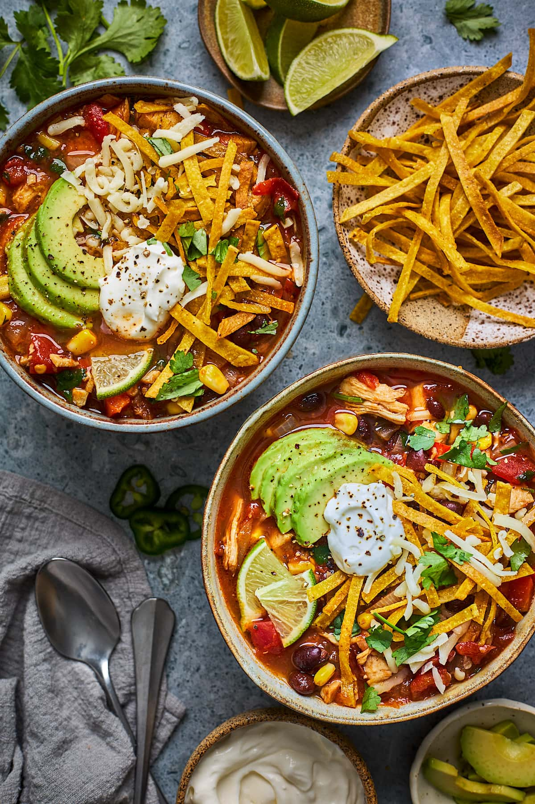

Ingredients
- 1 tablespoon olive oil
- 1 yellow onion chopped
- 3 cloves garlic minced
- 1 jalapeño diced and seeded
- 3 cups chicken broth
- 14.5 ounces crushed tomatoes
- 15 ounces canned black beans 1 can, rinsed & drained
- 10 ounces canned diced tomatoes with chilies such as Rotel
- 2 boneless skinless chicken breasts
- 1 cup corn drained if canned
- ¼ cup chopped fresh cilantro chopped
- 1 teaspoon chili powder
- 1 teaspoon cumin
- 1 lime juiced
- 1 avocado sliced, for garnish
Crispy Tortilla Strips
- 6 small corn tortillas cut into ¼-inch strips
- ¼ cup vegtable oil
- salt as needed
Instructions
- For the tortilla strips, cut the tortillas into ¼-inch strips. In a small pan, heat ¼ cup of vegetable oil over medium-high heat.
- Add the tortillas, in small batches to the oil and fry them until they are crisp, about 1 minute per side. Remove from the oil and drain on paper towel. While warm, sprinkle with salt to taste.
- In a large pot, heat olive oil over medium heat. Add the onion, garlic, and jalapeño to the pot, and cook until the onion is softened, about 3 to 4 minutes.
- Add in the chicken broth, black beans, crushed tomatoes, diced tomatoes with juices, corn, lime juice, cilantro, ground cumin, and chili powder. Stir to combine.
- Add the chicken breasts and bring the soup to a boil over high heat. Reduce the heat to a simmer and cook uncovered for 20 minutes, or until the chicken is cooked through.
- Remove the chicken from the pot and shred it with two forks. Add the shredded chicken back to the pot and simmer for an additional 3 minutes. Taste and season with salt and pepper.
- Spoon soup into bowls and top with tortilla strips, lime wedges, and sliced avocado.